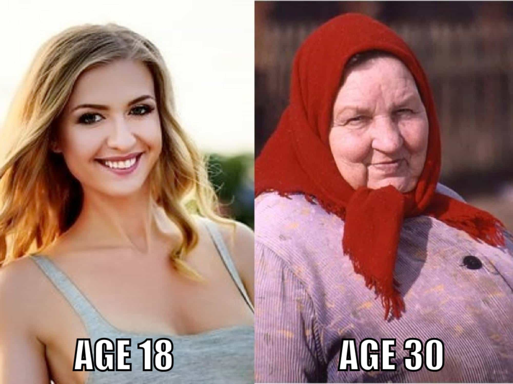

Mike travels the world, seeks to know the unknown, has a strong desire to expand his mind, and can be reached at [email protected]


I continue to hear that Ukrainian girls are the best of the best for beauty, femininity, family-oriented mentality, and traditional beliefs, or that the streets of Ukraine are flooded with supermodels, all of whom have the sole desire in life to start a family at 20 years old with an old, ugly, fat guy who simply treats them well and is a good man.
Of course in a country of over 40 million people, there will be girls who do have some of the qualities listed above, but for the most part Ukrainian girls are rather overrated for a variety of reasons. This can lead men to have tremendous disappointment when they experience Ukraine in person and get a harsh reality check. Why are they overrated? Let’s begin.
Obviously the photo below is exaggerated, but even the most beautiful Ukrainian girls have a short shelf life with their looks. Around the age of 23 is the peak of these girls’ attractiveness. 24-26 year old girls can still be attractive, but it’s heading downhill around this point. For example, even some 30 year old girls there can look good simply by staying slim, maintaining their long hair, and wearing the right outfits, but there’s definitely a marked difference from an averagely hot 23 year old to even the hottest 30 year old.

Most Ukrainian girls have very slim bodies with little to no curves. It’s rare to see one with great tits and ass. Every now and then I would see girls who had really amazing asses, but I wasn’t always sure that they weren’t implants since those girls always had lip injections and boobjobs as well. Personally, even though I like the slim model type of build, it got a bit old after a while, making me miss the nicer tits and asses of girls in other nearby countries.
The majority of the time their teeth are varying shades of gray or yellow, and sometimes you’ll notice visible decay on random spots. The best teeth I’d seen were those of a successful orthodontist, but even then her teeth weren’t truly white.
Their bad skin can be a variety of things from acne to random scars. They generally do a decent job of disguising it with makeup, to their credit, but the number of girls I’d seen in the past year wearing little to no makeup was surprising compared to the year before.
Some girls would have random scars that were largely unidentifiable as to how they happened, in case you wanted to play a game of “guess the trauma.” Stabbed? Bitten by an animal with a misshapen jaw and jacked-up teeth? Fell from a roof and plummeted through some tree branches, before finally landing on a pile of rocks? I was always wrong with my guesses. Usually they were remnants of an accident or botched surgery.
Side note: try not to need a doctor in Ukraine. Seriously.
Personally I don’t care about this one, but if what others think of you and your girl matters to you, and you’re planning on taking them out of Ukraine to a Western country (more on this below), be aware that many of them have that “mail order bride” look. Some of it can be remedied with a change in wardrobe to fit her new surroundings, but they’ll probably still maintain the “cold Soviet look” in their faces that most Ukrainian girls tend to have.
Some Ukrainian girls can actually be funny, warm, and interesting, although it generally takes a while for them to open up and display their full personality. For the most part, there’s a lot of quietness, lack of engagement in conversations, inability to understand a lot of jokes or even light teasing, which all leads to a big learning curve when dating them.
If you have a fun and clown-game type of personality, which can be rewarded in the West, you won’t like interacting with Ukrainian girls. Some men won’t care and may prefer this, some may find it boring and unstimulating, and some may get frustrated at their non-responsiveness most of the time.
In Ukraine, I’ve dated a wide range of career women from doctors to lawyers to corporate women. When I was new to the country, I thought the career women there would still retain all of their femininity because “it’s Ukraine.” Nope.
They all exhibited lower femininity in their demeanor than the women who either don’t work at all, or who have more basic jobs like a cashier or working in a call center. They aren’t nearly as bad as Western women, but it makes me wonder if it will quickly get worse over time.
Females aren’t designed to be career women by nature. It should be no surprise that even in Ukraine they begin to lose touch with their feminine side by choosing that path. Even the ones who wore feminine clothing and maintained their long hair had demeanor that was noticeably less feminine when compared to the non-career women.
The sheer volume of girls wearing flats in the city center of the capital, even on warm sunny days during weekends, was astonishing. I asked a few why they were wearing flats instead of heels, and they all answered the same…“it’s more comfortable.” These were single girls who supposedly wanted a man in their lives, but cared more about comfort. I’ve even seen girls in flip flops walking on Khreshchatyk Street, but thank goodness that was a rare sighting.
Other than the lack of high heels, short sexy dresses weren’t in abundance either. And a lot of times when I’d see a girl wearing a sexy feminine dress, she’d pair it with unflattering flats. I believe this trend is here to stay, but I hope it doesn’t quickly worsen.
The usual suspects are in the lineup: Tinder, Instagram, Facebook, etc. Many even use Whatsapp and Viber for the sole purpose of amassing an orbiter collection instead of actually going on dates. There’s no need to go in depth on this one since the negative effects are pretty widely known on how girls change when they become more entrenched in these things.
Tattoos seemed to be on the rise from just a year ago. Younger girls especially were keen to getting them, from tiny finger tattoos to large scroll tattoos on their torsos. Most of the time the tattoos weren’t even creative. It seemed like the girls would just be mimicking garbage they’d see on Instagram “models.” They’d would say the tattoos are cool and lots of their friends are getting them. Not a good sign.
Don’t get me wrong: Ukraine is still rather broadly unapproving of homosexuality. It’s not like there are half-naked gays dancing in the streets in tutus while waving inflatable dicks, but considering a few of the relatively recent occurrences like calling the Friendship of Nations Arch the “Arch of Diversity” and painting it in rainbow colors, along with gay pride parades like the one earlier this year in Kiev, the trend is clear.
Sometimes while I was out on dates, I’d see gay men on dates. The guys were always touchy-feely with each other and didn’t seem concerned about how others viewed them in public. Girls I was with would express that they’re happy for them and how everyone should live in harmony. If I stated that I didn’t like it, the girls would get upset and try to school me on how I should be more open-minded and accepting of such a beautiful thing as gay men in love. A couple of times they insulted me by saying I’m homophobic and that there’s something wrong with me. So much for having traditional beliefs.
Ukrainian girls shit test you almost constantly to see if you’re a strong man or if you’re a sucker they can control. Out of all the women in all the countries I’ve encountered, Ukrainians have been the worst (Russians weren’t too far behind).
I usually don’t mind shit tests since it can be fun to overcome them if done properly, but sometimes these girls can be really annoying. A Ukrainian man once told me, “Ukrainian girls need a good smack now and then to keep them in check”. While I don’t condone hitting a girl, this example shows that even the local Ukrainian men who are used to being strong around their girls still believe it has to be taken to that extreme with many of them.
Another local man said, “Ukrainian girls are like springs. As long as you keep it compressed, everything is fine. If you loosen your grip too much, the spring flies out of control and causes a lot of damage.”
Everything is a transaction in their minds. Even the sweetest girls there can flip like a switch if an opportunity arises to gain a financial advantage. It can be fairly manageable if you have tight game, don’t do cheap dates, don’t spend much on them, and don’t act like a provider or sponsor, but it does get old and annoying pretty quickly.
In my previous article I listed some specific scams to watch out for, but this calculating mindset goes beyond just isolated scammer tricks. It’s a state of mind that all of them seem to have to varying degrees, and will eventually rear it’s ugly head.
Even the nicest girls who truly like you will still have you stereotyped as a rich foreigner. If you are the type to want a woman to love you for you, and not care at all about your money, Ukraine isn’t the right place. This is true for pretty much all age points.
Now I’m not saying they’re all gold diggers. There are girls in Ukraine who want love. But you are a foreigner. It’s possible for her to fall in love with you for who you are inside, but the improvement in her financial situation as an escape from “the hell that is Ukraine” will always be somewhere in her mind when she looks at you. Some men may want to use this as part of their gaming strategy to imply financial gain, but it’s much better to play it cool and act normal rather than rich.
Frustrated? Annoyed? Likely both.
One date. Two dates. Three dates. Four dates… wait, what? Didn’t Bang Ukraine say the girls understand that the third date means sex? Yes, the girls absolutely know that the third date and beyond means sex, but that doesn’t mean it’ll necessarily happen just because she goes on those third and fourth dates.
As a matter of fact, her knowing that those dates mean sex allows her to mentally prepare even more to NOT have sex beforehand, effectively countering the “it just happened” scenario that you (should have) set up for the date.
They can be quite crafty at avoiding sex to attempt to extract more from you. Sometimes they’ll even use the “I’m not ready this time, but next time we’ll have sex” line when they know they’ve pushed you to your limit with multiple dates and extreme LMR (last-minute resistance). Once they say that and leave, there will rarely be a “next time.”
Some tactics were so common that it was almost like there’s a Don’t Bang Ukraine book that a Ukrainian girl wrote as a manual to maximize their resource extraction from foreign men and give them little to nothing in return.
This low ROI issue is very real. Some of you unfamiliar with these girls might say, “They’re traditional girls and it’s normal to wait much longer for sex,” but as I said, the problem is that there’s no guarantee that they’ll bang you if you continue to go on many dates and waste your time and money. Even getting heated during a date isn’t always a foolproof guarantee. Many Ukrainian girls seem to have superhuman control over their minds and vaginas even when they’re genuinely horny.
They usually prefer either a high value Ukrainian man or a sponsor, but more likely both. These girls aren’t dumb. They know their value. It’s theoretically possible to bang a 9 or 10, but if you think you’re going to go to Ukraine and spit your awesome game and be rolling in 10s, think again.
The very first time I went to Kiev, I banged a 9 on the second date. Before that, in Lviv, I banged a 9 in less than two hours of meeting her. At the time, since my game and logistics were solid, I thought I could repeat that indefinitely. I thought Ukraine was a breeze and would always be that easy. In retrospect, both girls were a combination of game, timing, and luck.
After spending more time in Ukraine later on, I realized it’s frustratingly difficult to get with the 9s and 10s, especially those who weren’t the groupie types. Even the 9 and 10 groupies can be hard most of the time since they interact with a lot with foreigners who make things worse by showering them with gifts and attention. I’m not saying it can’t be done, but it can be quite laborious. 8s have been getting increasingly difficult as well, often requiring much more work and a higher tolerance for bullshit to get the bang.

Firstly, some tough love: God help you if you’re stupid enough to want to marry one of these girls and take them back to a Western country like USA. These women will destroy you. I don’t care how solid your relationship game is. You’re not a natural. If you were a natural, you wouldn’t even be on sites like this. You wouldn’t have ever tried to learn game. Ukrainian girls are born naturals. And they’ve had many, many years of practice perfecting their game beyond even a natural status.
If you take her out of Ukraine, she can and likely will crush you. It may not happen in the first month, first year, or even a couple of years, but the clock will begin ticking the day you take her to her new Western world. Ukrainian girls I’ve known who were permanently living in USA actually brag about how they’ve completely destroyed the man who brought her out of her shithole and gave her a new life.
They were not only proud that they took him for everything he had and left him an utter shell of his former self, but they seemed to tell their stories with a glimmer of joy. You can say all women are like that, but these girls can take it to a different level. And to squash the increasing trend of girls telling foreign men that they like Ukraine, don’t believe them. They’re just trying to make you think that they’re different from the other girls there. Trust me, they all want to get the hell out of Ukraine, especially to go to USA. If you find a marriage-worthy Ukrainian girl and you’re sure you can handle her, your best bet is to live in Ukraine and preferably have her parents in the same city.
One of the biggest reasons Ukrainian girls are overrated is because they’re from Ukraine. Ukraine isn’t a wonderful country. There’s turmoil, suffering, corruption, and scamming that’s been a part of the country for a very long time. I won’t get into the politics of it, or into the psychological analysis as to why, but these things don’t bode well for a girl’s overall mental state over the long haul.
This article isn’t meant to simply trash the country and its girls, but rather to clarify myths and misconceptions surrounding them, to better prepare men for what they may encounter if they choose to go there. Although Ukraine isn’t a poosy paradise, and the girls do have lots of flaws, there are many beautiful women there who are lay-worthy, plenty who are girlfriend-worthy for mini relationships, and some who are wife-worthy with the caveat stated earlier. Just don’t expect to waltz into some kind of fantasyland of supermodels with them fawning all over you just because you’re the pimp that you are.
Read More: 10 Scams Ukrainian Girls Try To Pull On Foreign Men